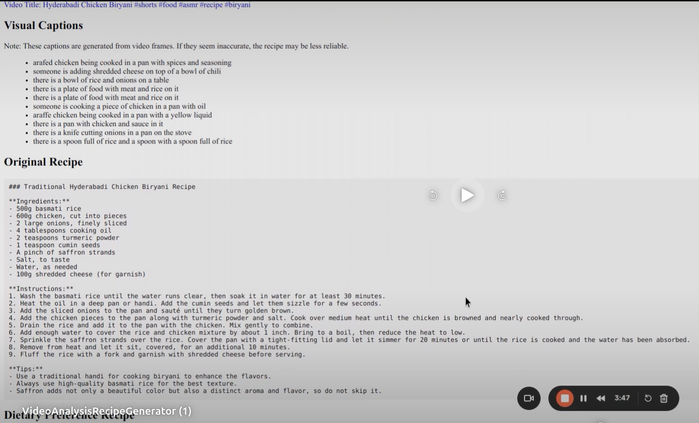
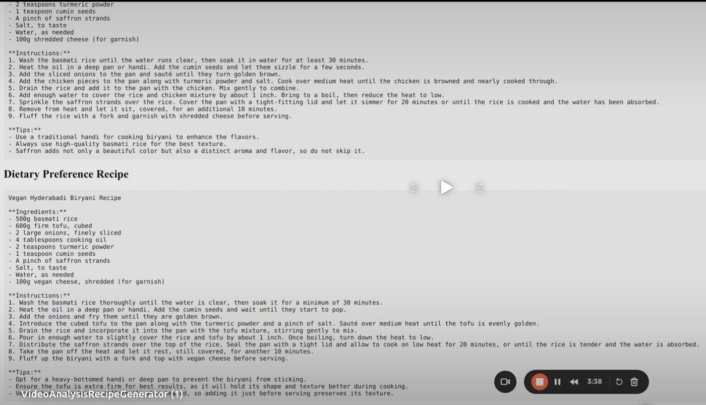

What it does
Upload a cooking video or paste a YouTube link, and get back a complete recipe: ingredients with quantities, numbered steps and tips. Optionally, get the same dish adapted to a diet such as vegan or gluten-free.
Pipeline
- Key frames: OpenCV picks frames where the scene changes, using frame differences, so the model sees each cooking step once.
- Vision: BLIP captions each key frame ("chicken being cooked in a pan with spices").
- Audio: FFmpeg extracts the audio and Whisper transcribes it, or the video's subtitles are used when available.
- Reasoning: an LLM combines captions and transcript, infers the dish and cuisine, and writes a structured recipe and the dietary variant.
Screenshots


Stack
Flask, Salesforce BLIP, OpenAI Whisper, GPT-4 Turbo, OpenCV, FFmpeg and yt-dlp, with a plain HTML and JavaScript front end.